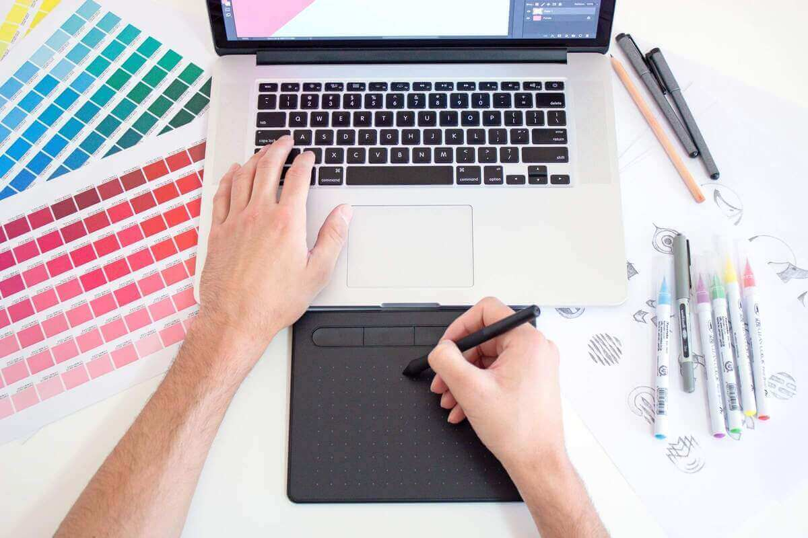
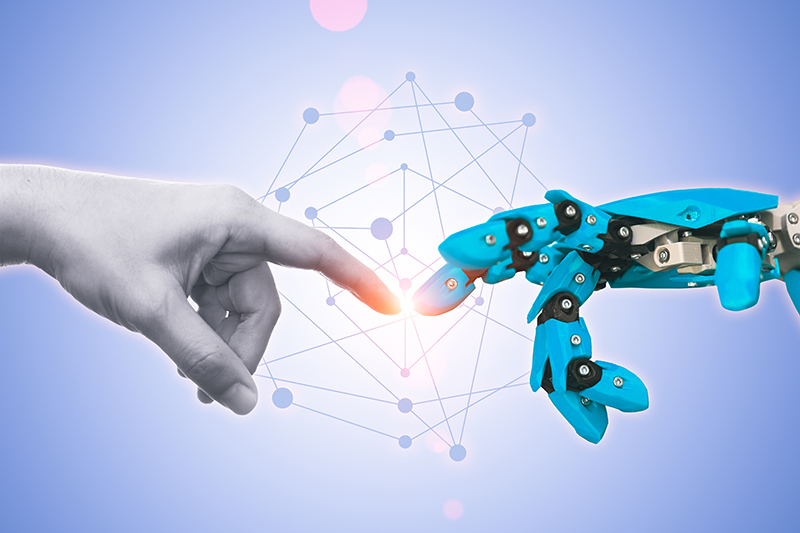

Explorando la Creatividad en el Mundo Digital

✨ La Magia de Crear en la Era Digital
En un mundo dominado por la tecnología, la creatividad 🌈 sigue siendo el alma que da vida a las innovaciones más asombrosas. Desde el diseño gráfico 🎨 hasta el desarrollo de aplicaciones 📱, nunca antes habíamos tenido tantas herramientas a nuestra disposición para convertir ideas 💡 en realidades tangibles.
💭 ¿Por qué es importante la creatividad hoy?
La creatividad no solo es arte 🎭; es la capacidad de ver más allá de lo evidente, conectar ideas aparentemente dispares y resolver problemas con enfoques originales. En la era digital, estas habilidades son clave en campos como:
- 💻 Desarrollo de Software: Crear interfaces intuitivas y atractivas que cautivan al usuario.
- 📢 Marketing Digital: Contar historias impactantes que conectan emocionalmente con el público.
- 📚 Educación: Diseñar experiencias interactivas que revolucionan la manera en que aprendemos.
🛠️ Herramientas que despiertan tu creatividad
Si estás buscando potenciar tus habilidades creativas, aquí tienes algunas herramientas increíbles:
- 🖌️ Canva: Ideal para diseño gráfico sin experiencia previa.
- 🎨 Procreate: Una aplicación poderosa para ilustraciones digitales.
- 📝 Hugo + Ananke: ¡Crea blogs y comparte tus ideas con el mundo!

🌍 Inspiración desde la cotidianidad
¿Sabías que las mejores ideas a menudo surgen de momentos simples? 🌅 Un paseo por la naturaleza, una conversación inesperada 💬 o incluso una taza de café ☕ pueden ser la chispa que encienda la llama creativa. Aprende a encontrar inspiración en los pequeños detalles y verás cómo tu mundo creativo se expande. ✨
🎉 ¿Y tú, qué estás creando hoy?
La creatividad es un viaje sin fin. Comparte tus ideas, inspírate en otros y, sobre todo, ¡nunca dejes de explorar! 💡
“El futuro pertenece a quienes creen en la belleza de sus sueños.” – Eleanor Roosevelt 🌟